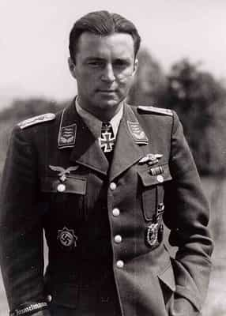
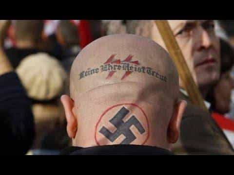
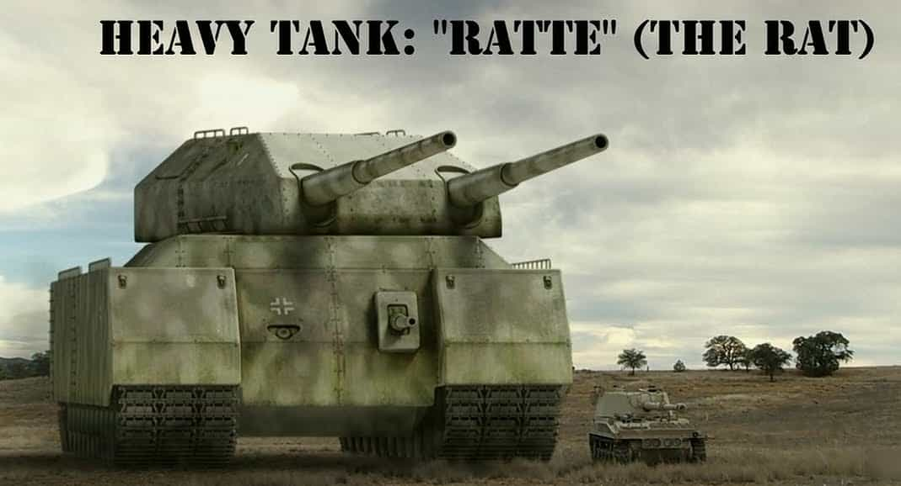

John Carver is a four year ROK veteran with over fifty articles of SJW-triggering truth bombs on archive. You can follow him on Twitter if you are so inclined.


In the wake of the recent incidents in Charlottesville, where the whole right wing spectrum has taken a gigantic hit in credibility and sympathy due to the actions of a single Nazi-affiliated wacko, I think now is a good time to re-assess where we stand in relation to the more extreme factions on our political corner.
To put it out in the open, the masculine right should have NO sympathy or comradeship with old Nazism or it’s featherweight modern interpretations whatsoever. Spot it, shun it, or walk away in a 90-180 degree direction. Here are nine brief reasons why, and feel free to add more.
Cuck Country
Nazism and it’s legacy has thoroughly browbeaten and humiliated what should be the proud people of Germany. A country which has been responsible for a sizable percentage of all the world’s technological and scientific advancements for several hundred years (starting with the monumental Gutenberg press in 1440), saw most of it’s gorgeous and irreplaceable cities turned to rubble in World War II, and it’s people have had to endure over 70 years of agonizing Third Reich references and their related put-downs.
Due to this history, it’s modern day citizens are conditioned to embrace self-destructive SJW agendas like few others in the world today. Additionally, right wing sentiments in the country are looked down upon with immediate suspicion or even outright scorn, no matter how sensible they may be.

Nazism has arguably made dressing in incredibly handsome (no homo) and well-tailored suits uncool for entire generations of men in the late 20th and early 21st centuries. Particularly if they share similar color codes with Wehrmacht or Gestapo officers (grey or black). As for any symbolic imagery, that’s a complete no-no or “cultural appropriation” at best.
In it’s wake, dressing well in such a manner has become a source of ridicule among young people. It’s akin to being lambasted as a “one percenter“, while butt-ugly Antifa rags, giant tattoos, piercings, and dyed hair are supposed to be “beautiful” and “inspiring”.

Neo-Nazi’s hijack many of the ideas and virtues of the masculine right and make it appear like we are both fellow travelers. Not only is this association entirely unwanted on our part, when they screw up it severely damages the reputation of any right wing cause (which the fake news media uses as defamation fuel) and turns off many potential converts to the red pill. Many others accordingly become even more belligerent SJW’s due to their perceived tag-along status.
The Confederacy was a constitutional Republic (like the USA and France which both fought the Nazis)
Neo-Nazi’s tendency to display their flag in close proximity to the confederate battle flag has made both Nazi Germany and the Confederacy appear almost indistinguishable from each other in the eyes of historically retarded leftists. The Confederate States of America is now called “fascist” when in fact it was a constitutional Republic like many modern Western nations. Also, short of just two battles between professional soldiers at Antietam and Gettysburg, they fought an entirely defensive war against mass rape, pillage, and arson.
The left wing media, SPLC, Antifa, and other organizations then tactfully use these photo ops to try and obtain full legitimacy in their take down campaign of Confederate monuments and memorials. All with absolutely no input from local citizens.
While not giving tacit approval of the Confederacy, it is nonetheless blatant intellectual dishonesty with how the left twists this episode of American history to suit their current narrative. Neo-Nazi’s and their nearby flag waving give the left all the fuel they need to make this dishonesty a “truth”.

Unlike their 1930’s and 1940’s counterparts (who made dressing super stylish uncool), Neo-Nazi’s tend to be big fans of donning degenerate “don’t give me a job” ink in all the worst places. The number of articles in Return Of Kings where we clearly expresses our disdain for rampant tattooism is simply too many to count.
SJW Media: Yes……. “denounce” and genuflect to social justice!
The few Neo-Nazi’s give endless fuel to social justice obsessed websites and Youtube channels like Huffington Post, Al Jazeera Plus, MIC, ATTN, and MTV News to always have a moral checks-and-balances system in place against the Caucasian right, in case another high-casualty Islamic terrorist attack (inevitably) happens or they are feeling increasingly boxed in by embarrassing incidents.
Honestly, if Neo-Nazi’s and the KKK didn’t exist at all, the left would struggle so much to have any regular attacking fuel against the ‘white right’ on social media it’s not even funny.
See those girls over there? Let’s go wing it buddy!
Is there a fair bit of mud-slinging about black crime rates or black male-white female interracial relationships on the masculine right? Sure there is, I’ve even addressed the crime factor several times and it’s undeniably a big problem in the United States.
However, does that mean that black men (or non-white men in general) aren’t welcome in this sphere? Of course not. Guys like Donovan Sharpe provide a valuable insight on the red pilled black male experience, and black men in the comment section like Psquare and Red Hood’s Assault drop among the best tidbits of wisdom that one could ask for.
Some big mouths aside on the keyboard, a large gathering of masculine right regulars would be pretty much guaranteed to produce more genuine black-and-white friendships than any pretentious pow-wow of liberal hipsters.
As for Nazi types, they wouldn’t even try.
The masculine right loves fitness, quality reading, game, entrepreneurship, minimal or no body modifications, and otherwise imperfect (but good) citizenship. The only time you’ll see Neo-Nazi’s who appear to have been doing any lifting or quality reading are the ultra-tattooed one’s who just got out of jail. Let’s just say this creates a lot of conflicts of interest…

And finally, as awesome as it would have been to see a functional big-ass ‘Ratte’ tank in the flesh, here on the masculine right we are not particularly big fans of violence and war, which is what the Nazi’s did all throughout Europe and the Atlantic for more than half a decade.
Countless lives lost, gorgeous buildings gone forever, and irreplaceable works of art gone missing means that Nazism is an affront to those who take pride in western civilization.
The modern incarnation of Nazi’s, however incredibly small and non-threatening as they are, is just as bad as the violent SJW’s who are hell bent on taking down western civilization themselves. Primarily because they give the SJW’s a sense of legitimacy for their destructive actions. So stop it, both of you.
Read Next: 6 Reasons Progressives, Leftists, And Sjws Are (Literally) Hitler